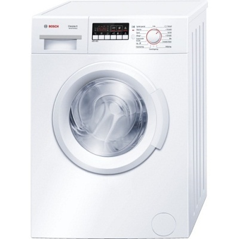

VitaLina+


Стиральная машина Bosch, 6 кг, A+++, 1400 об/мин, WAB28266SN
СПЕЦИАЛЬНОЕ ПРЕДЛОЖЕНИЕ! 349,00 Старая цена 573,00 Сбережете 224,00 –39%
Товар на складе (доставка 1 – 3 дня)
• Описание товара
• Технические характеристики
Технология ActiveWater™: система автомат. Регулирования объема воды Технические параметры: Класс стирки: A Класс центрифуги: B Уровень шума: 59 dB (A) Уровень шума центрифуги: 77 dB (A) Класс энергии - NEW (2010/30/EC) : A+++ Потребление годового электричества (2010/30/EC): 153 kWh/a Загрузка: боковая Ручка слева Объем барабана: 42 л Высота регулировки: 1,20 см Глубина с открытой дверцей (90°): 98,40 см Предварительная стирка: да Контроль пены: да Защита от протекания: многослойная Отображение программ: LED